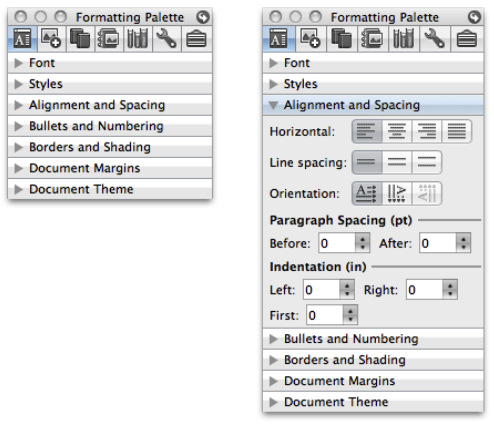

Texto
A lo largo del tiempo, los diseñadores de interfaces de usuario han generado y probado varios diseños con el fin de lograr que la interfaz sea fácil de usar para los usuarios. Algunos de ellos han funcionado perfectamente, otros no. Como diseñadores, es importante tomar en cuenta aquellos diseños que han funcionado y que diseñadores anteriores a nosotros los han materializados en "recetas" a seguir. En este apartado revisaremos dichas recetas conocidas como Patrones de Interacción y que nos servirán a que nuestros diseños sean más usables.
Historia y Concepto
Los "Patrones" nacieron en el área de la Arquitectura, antes que en el área del Software. En el libro A Pattern Language: Towns, Buildings, Construction (Un lenguaje de patrones: poblaciones, edificios, construcciones), Christofer Alexander introduce formalmente el concepto de patrones. Aunque este libro fue publicado en 1977 y trata sobre arquitectura y urbanismo, es la piedra angular de los patrones en la computación por las siguientes razones:
-
Filosofía: Alexander argumentaba que los usuarios de un espacio (o software) entienden sus necesidades mejor que nadie, y que el diseño debe basarse en soluciones recurrentes a problemas comunes.
-
Estructura: Alexander definió el formato de un patrón: Contexto → Problema → Solución. Esta es exactamente la misma estructura que usamos hoy en el diseño de interfaces (HCI) y en la ingeniería de software.
-
Influencia Directa: Este libro inspiró directamente a varias áreas de la industria. En El software específicamente, el libro inspiró a varios autores como: i) Ward Cunningham: El creador de la primera Wiki, diseñada originalmente para compartir patrones de programación, ii) The Gang of Four (GoF): Quienes adaptaron esta idea para crear el famoso libro Design Patterns: Elements of Reusable Object-Oriented Software.
Inspirados en la arquitectura de Christopher Alexander y adaptados al software por la "Banda de los Cuatro" (GoF), los patrones de interacción son soluciones probadas a problemas comunes de interfaz. Si todos saben que el logo arriba a la izquierda lleva al inicio, ¿para qué inventar algo nuevo?
Estructura de un Patrón
- Nombre: Identificador claro (ej. "Infinite Scroll").
- Problema: ¿Qué necesita resolver el usuario?
- Contexto: ¿Cuándo se aplica?
- Solución: Descripción visual y lógica.
- Ejemplo: Caso real de uso.
Ejemplo: El Patrón "Acordión"
- Nombre: Accordion.
- Problema: El usuario quiere ver más de un módulo de información al mismo tiempo.
- Contexto: Tienes que mostrar en una página un volumen alto de contenido heterogéneo (texto, listas, botones, controles de formulario, imágenes, etc) y no tienes espacio para cada cosa. Algunos de los contenidos de la página están en grupos o módulos y el usuario quiere ver más de un módulo al mismo tiempo.
- Solución: Poner módulos de contenido dentro de una pila colineal de paneles que pueden ser cerrados y abiertos de manera independiente.
- Ejemplo: Caso real de uso.

Adaptado de la página 159 del libro Designing interfaces de Tidwell.
Recursos de Consulta
- Libros: Designing Interfaces (Jenifer Tidwell), Don't Make Me Think* (Steve Krug).
- Webs: UI-Patterns.com, Mobbin.com (Para patrones en apps móviles).